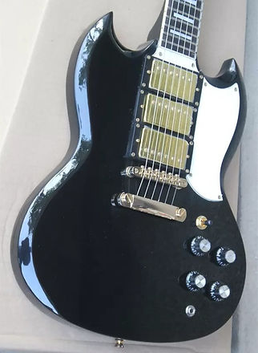

En grande partie inspiré par Angus Young dans le choix de mon 1er instrument, c'est sur une réplique de Gibson SG que j'ai fait mes débuts. La forme SG ("Solid Guitar"), facilement reconnaissable, est issue de l'imagination de Ted McCarty mettant au point ce modèle en 1961. Les "cornes" de l'instrument garantissent un confort de jeu tout le long du manche, les chanfreins du corps permettant quant à eux d'alléger l'instrument tout en le rendant plus attrayant.
Cependant, la réplique que j'avais en ma possession était légèrement différente dans sa conception : les chanfreins des cornes et du corps étaient moins prononcés et le design de la tête du manche était différent de celui utilisé par Gibson. Au delà des formes, l'aspect neuf de l'instrument me paraissait trop "parfait" pour une guitare qui se doit être vintage.
Il m'est alors venu l'idée de redessiner les contours en plus de vieillir artificiellement l'instrument pour s'approcher au mieux d'une véritable Gibson SG de 1961.
Etape 1 :
Ré usinage des contours
Le premier défi fut de retirer l'épaisse couche de peinture et de vernis polyuréthane pour mettre le bois à nu.
Une fois le grain apparent, nous pouvons commencer à usiner à l'aide de râpes à bois les chanfreins pour approfondir ces derniers.
Ce fut aussi pour moi l'occasion d'agrandir les cavités des micros, me permettant alors leur déconnexion ou remplacement de manière indépendante.

music-guitars.fr

premierguitar.com
Une fois les contours redessinés, le corps de la guitare est repeint à l'aide d'une couche primaire, trois couches de peinture ainsi qu'une couche de vernis.
Visuellement, la guitare est désormais plus fidèle au modèle de 1961, cependant, un détail manque. En effet, de par leur utilisation, leur stockage ou les climats auxquels elles étaient exposées, ces guitares des années 1960 ont vieilli. Même pour les mieux conservées d'entre elles, les mêmes phénomènes surgissant au niveau du vernis, de l'accastillage ou des plastiques.

equipboard.com
Etape 2 :
Vieillissement artificiel
Pour répliquer les cicatrices du temps, je me suis inspiré de plusieurs modèles trouvés sur le net, cependant, c'est dans le livre « Guitare, un art de vivre » que j'ai trouvé ma principale inspiration : la SG de Louis Bertignac.
J'ai donc commencé par endommager le vernis et la peinture du corps pour simuler une usure excessive. Le placage ou l'accastillage en contact avec la main est effacé pour mieux reproduire l'action de la sueur sur l'or. Les boutons de volume et tonalités sont remplacés par un format historiquement correct pour l'époque.

guitarworld.fr

Il ne reste plus qu'à reproduire le craquage du vernis nitrocellulose présent sur toutes les guitares vintage. Je prends pour modèle encore une fois une SG standard de 1961.
Pour réaliser le craquage, je tente de reproduire les motifs aléatoires des craquelures sur l'ensemble du corps et la tête du manche. Je vais faire converger les craquelures vers les points les plus sensibles à savoir : la sortie Jack 6,35, les potentiomètres ainsi que les vis.

Je me suis aussi inspiré du travail de l'artisan Michaël Boudoux (Relic'Art Guitars) pour vieillir cet instrument.

Découverte | "Hook For Xmas" | Décembre 2021
Comme première expérience dans la lutherie, l'électronique et la peinture, ce projet m'a servi de support pour m'exercer sur les nombreux domaines auxquels la guitare électrique fait appel. Au delà de l'aspect visuel que je recherchais, ma plus grande satisfaction fut de pouvoir entièrement modifier, personnaliser et même faire de la maintenance sur mon propre instrument et ceux, en autonomie.